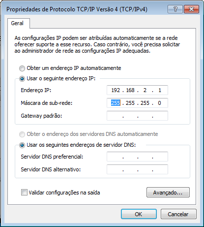

Pré-Set Roteador
1º
Roteador deve estar desligado.2º Coloque IP fixo na conexão local para:

3º Procure na Área de Trabalho a pasta:

4º Dentro da pasta execute os 2 arquivos:

5º Ligue o roteador, conecte o cabo de rede nele e aguarde alguns instantes.
6º Verifique se funcionou o pré-set*
*para confirmar o pré-set basta verificar se o nome do wifi do roteador ficou com o nome: PontoCom_14A5 (esses 4 últimos é único em cada roteador portanto vai variar).